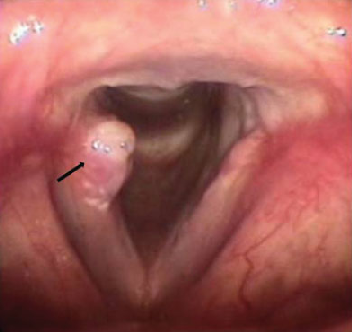

Laryngeal Granuloma

CAUSES
Laryngeal granulomas form as a way for the body to protect itself when the lining on the cartilage at the back of the larynx is damaged, leaving the larynx exposed. This damage can result from a number of factors, which include:
- Traumatic intubation, or the insertion of a breathing tube (most commonly through the trachea)
-
Phonotrauma, or abusive use of the voice, such as forceful singing, coughing and shouting
-
The reflux of stomach acid into the larynx (laryngopharyngeal reflux)
SYMPTOMS
Patients suffering from a granuloma on the vocal cords generally experience:
- Severe hoarseness
-
Change in voice pitch
-
Discomfort or pain in the throat
-
Fatigued voice
DIAGNOSIS
The presence of a granuloma can be confirmed by a laryngologist who may perform:
- Laryngoscopy – An endoscopy of the larynx
-
Videolaryngostroboscopy – A procedure in which the high-speed flashes of a stroboscope are used to observe movement in the vocal folds
-
Electromyography – A test that uses nerve stimulation to evaluate muscle response
TREATMENTS
Effective treatment for the condition begins with accurate diagnosis. Depending on the cause of your laryngeal granuloma, our medical professionals may recommend using the following conservative, non-surgical treatment methods: